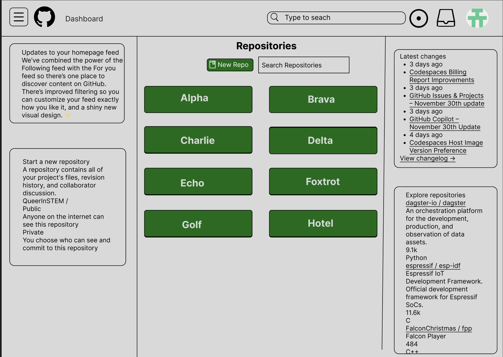

This is the changed home screen. Notice how I made the home page less busy and confusing to new users.

This is the changed home screen. Notice how I made the home page less busy and confusing to new users.
This is the Github Home screen, flip the switch to see how I improved it